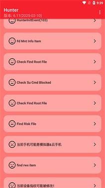

Hunter 到底值不值得掏钱？——一个认真算过账的安卓玩机人给你算三笔
Hunter 本身免费，但同类检测工具有不少收费的。我把自己当轻度、主力、重度三档用户分别算了一遍，结论比你想象的要实在。
先抛问题：Hunter 到底值不值得掏钱？
这标题其实有点鸡贼——Hunter 本身是免费的，它的官网从首发到现在一直没收过费。但问题的本质不是"Hunter 多少钱"，而是：你要不要为一台能帮你看清安卓环境的检测工具掏钱？ 以及"用免费 Hunter 这件事本身，有没有让你在别的地方多花了钱或多耗了时间？"
我认真捋了一遍自己过去大半年用 Hunter 的场景，又对照了几个同类收费工具的定价，把账拆成三类人来算。对号入座就行。

定价拆解：免费给什么，付费版多什么
先把家底亮出来。Hunter 目前只有一个版本——全功能免费。没有订阅，没有买断，没有广告。检测项涵盖了 Root 痕迹、Xposed/LSPosed 框架、Frida/IDA 调试器、模拟器环境、设备指纹、系统分区完整性、反调试状态这几大类，扫描一次大概三十秒出结果。
对比一下市面上几个同类的收费工具：
- DevCheck Pro：买断制，约三十块人民币。Pro 版多了硬件信息深挖、电池健康度、传感器校准，但环境检测这块和免费版没区别
- Momo Plus：订阅制，按月约八块、按年约六十。Plus 版主打实时监控和自动存档对比，但单次扫描的检测项和 Hunter 高度重叠
- Ruru Premium：一次性买断约四十块。Premium 版增加了 Play Integrity 模拟测试和更多的隐藏策略验证，但基础检测功能完全免费
说句公道话——Hunter 的免费版在核心检测项的数量和精度上，不比这三家的付费版差。甚至 Root 隐藏验证这块，Hunter 的 DenyList 专项检测比 Momo 还细。Hunter 的定价策略挺有意思：它把真正有差异化价值的功能（比如 ISO 强检测、反调试+Unidbg 组合检测）直接放进免费版，没留什么"付费解锁"的钩子。
这就引出了一个关键问题：Hunter 免费，但它省了你多少钱？或者反过来说，你在 Hunter 上省下的钱，有没有在别的地方吐出去？
算账：三类用户分别算
轻度用机：每月扫一次，免费版绰绰有余
这类人大概占 Android 玩机用户的六成。Root 过一次就长期用了，不折腾框架，不玩逆向，偶尔想起来跑一遍 Hunter 看看环境干净不干净。
每月使用时长估算：两分钟——打开、扫一遍、看看有没有红项、关掉。
Hunter 成本：0 元同类付费工具成本：假设选最便宜的 Momo 年付 60 块，月均 5 块
算账：5 块钱换每月两次两分钟的"心理安慰值不值？说实话不值。轻度用机的人对环境干净度的敏感度没那么高，Root 隐藏能不能过微信支付宝才是真正的痛点，Hunter 只是帮你确认一下"哦果然还有几个红项"。从Hunter下载拿到安装包跑一遍，不够的话装个 LSPosed 的 Zygisk DenyList 配一下，成本还是 0。
结论：轻度用户永远不用付费。Hunter 免费版给的够多了。
主力玩机：每刷一次 ROM 必扫，时间账才是关键
这类人占三成。ROM 刷得勤，框架装了又卸，Zygisk DenyList 来回调，每次改完系统第一件事就是开 Hunter。我自己属于这一档——去年一年刷了至少十二次机，每次刷机后的体检流程大概是：刷完先跑 Hunter 记基线 → 装 Magisk+Zygisk 再跑 → 装 LSPosed 跑模块后再跑 → 重启后再跑一次 → 改完 DenyList 后再跑。刷一次机至少跑五遍 Hunter。
每月使用时长估算：按每月刷两次机，每次五遍Hunter+Momo交叉验证，总共十五分钟左右。
Hunter 成本：0 元对比 Momo Plus 年付：60 元/年，换一个"实时监控+自动存档对比"功能——主力玩机的人确实需要对比基线，但 Hunter 的免费版每次扫描完手动存个截图也能对比，就是麻烦点
算账：时间成本 vs 金钱成本的博弈。手动截图对比 vs 自动存档对比，省的大概是每次刷机五到十分钟的整理时间。年付 60 块换"每次刷机省十分钟"，一年二十四次刷机就是省四小时。4 小时值 60 块吗？看你小时工资。如果你一小时值 30 块以上，这笔账可以算；值不到，那 Hunter 免费版手动存存就行。
但 Hunter 免费版有个隐性成本：它不做 Play Integrity 测试。主力玩机人刷完 ROM 最关心的其实是"过不过 Play Integrity Device 检查"，Hunter 给不了这个答案，你得额外装个 PlayIntegrity API Checker。这个小工具是免费的，但又多了一个 APP。
所以主力玩机的账得这么算：Hunter（免费，帮你扫痕迹）+ PlayIntegrity Checker（免费，帮你测过不过）= 两个免费工具凑齐主力玩机的体检需求。60 块买 Momo Plus 主要是买了个"合二为一"的便利，但真差那点功夫吗？
结论：主力玩机可以等一等。Hunter 免费版够用，等它哪天出个 Play Integrity 集成版再考虑付费也不迟。
重度折腾：逆向开发者/安全研究者，效率决定一切
这类人占不到一成。他们用 Hunter 不是为了"看自己手机干净不干净"，而是为了验证开发的隐藏策略过不过检测、测试逆向环境有没有被目标 APP 的反作弊框架命中、研究不同检测工具的命中逻辑差异。
每月使用时长估算：每周至少十遍，加上 Momo、Ruru、SafetyNet 一起交叉跑，每次调试可能循环跑几十遍，每月少说得五六个小时。
Hunter 成本：0 元（但 Hunter 免费版没有 API 也没有自动化支持，全手动）假设 Hunter 出 Pro 版：比如 80 块买断，多了命令行接口、批量扫描、结果 JSON 导出、CI/CD 集成——对重度用户来说这笔钱是值的，因为手动在模拟器里开十个实例分别扫一遍，光人工操作就得半小时
但目前 Hunter 没有 Pro 版。重度用户能做的就是 Hunter + Momo + Ruru 三选一全装着，各自手动跑一遍。Hunter 的优势在于 ISO 强检测和反调试+Unidbg 组合检测，这两项是另外两家免费版没覆盖的，具体参数和判定逻辑可以去Hunter文档深挖。Hunter 在重度用户的工具箱里是增量，不是替代。
结论：重度折腾没得选，继续免费用着。Hunter 目前没付费版，等它出的时候再看功能值不值。如果只是 Hunter 单独出了个 API，80 块买断毫不犹豫；如果只是加了几个检测项，免费版已经覆盖了核心，没必要。
替代方案：不付钱还有什么路
如果你看完三档账觉得"我好像有点想付钱但又觉得 Hunter 不够"，还有三条路：
路一：继续 Hunter + 免费辅助工具组合。Hunter 扫基础痕迹 + PlayIntegrity Checker 测官方环境校验 + SafetyNet Check 补老机型的验证需求，三个加起来 0 元，覆盖 90% 的场景。剩下那 10%（比如反作弊框架专项验证），老老实实装 Momo 免费版就行，Momo 免费版的实时监控虽然限功能，但日常用够了。
路二：直接上 Momo 年付。如果你对"基线存档对比"有执念，Momo Plus 的自动对比确实爽——扫完自动和上次的结果 diff，红了哪些绿了哪些一眼看出来。60 块一年，主力玩机以上可以考虑，但轻度用户真的没必要。
路三：Ruru Premium 买断。Ruru 免费版的检测深度其实挺强的，但 Premium 版多的 Play Integrity 模拟测试和隐藏策略验证是真金白银——如果你开发隐藏模块需要跑各种测试场景，这四十块钱花得比 Hunter 出 Pro 版还值，因为 Hunter 目前连模拟测试功能都没有。
我的建议：先把路一走到底。Hunter 免费版 + 两个免费辅助，凑齐了能用的全套。等你真在某条路上遇到 Hunter 覆盖不了的场景，再考虑花钱补那个缺口。提前付费的本质是给"可能需要的功能"买单，而 Hunter 这种工具的迭代速度，你今天需要的功能说不定明天就进免费版了。
结论：哪类人闭眼付，哪类人永远不用
最终结论说人话：
- 轻度用机的你：永远不用付。Hunter 免费版给的够多，你那台刷过一次就没再动的机器，跑一遍 Hunter 看到几个红项（大概率是 Magisk 没隐藏干净），配好 DenyList 再跑一遍绿了，完事。30 块的 DevCheck Pro 对你来说就是个硬件信息展示器，你真的需要看电池循环次数吗？
- 主力玩机的你：再等等。Hunter 免费版 + PlayIntegrity Checker 双枪组合是主力玩机的最低成本方案。真嫌手动截图麻烦，60 块的 Momo Plus 可以考虑年付，比 Hunter 出 Pro 版之前你能买到的任何东西都实在。
- 重度折腾的你：继续免费用，同时关注 Hunter 的迭代。它现在没有付费版，但如果哪天出了命令行接口或 CI 集成，80 块买断我第一个掏——批量扫描+结果导出对逆向调试来说省的不是时间，是"能不能自动化跑 20 个模拟器实例"的可能性。但在此之前，Hunter 在你的工具箱里就是一个免费的增量补充，不是主力工具。
最后说句公道话：Hunter 这个定价策略挺鸡贼的——它把用户真正关心的核心功能（ISO 强检测、反调试组合检测）全放进了免费版，没留任何"付费解锁"的钩子。但这也意味着它的商业化空间被压得很窄：想让用户掏钱，它必须拿出 Hunter 免费版里完全没有的东西，而不是"更好用的 Hunter"。对一个靠社区贡献驱动的项目来说，这个取舍挺聪明——先占住免费检测的心智，等有了足够的用户量再考虑商业化。

顺手交代一句
这篇文章里提到的所有检测项、场景和对比，都是基于 Hunter 官方公开文档和我自己的实际使用。这套资料维护者同时同步在 GitHub、Gitee 和 GitCode 三个仓库——随便选一个你顺手的就能拿到完整内容，参数说明和隐藏策略教程比本文细得多。